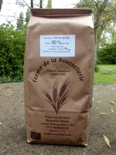

Sucre et farine

Le sucre cristallisé Tirelemont est un véritable sucre à tout faire. Vous pouvez non seulement l’utiliser pour préparer de délicieuses confitures, il convient également à la préparation de gâteaux, de cakes et de biscuits.

Farine de blé bio
Tamisé 60% (type 80)
-40% son
Allergène : gluten